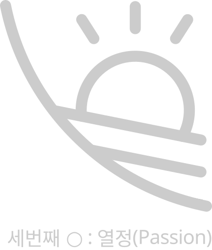
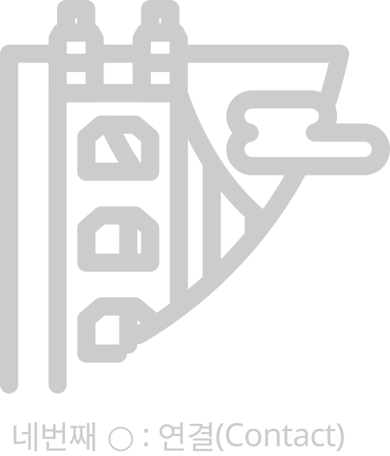
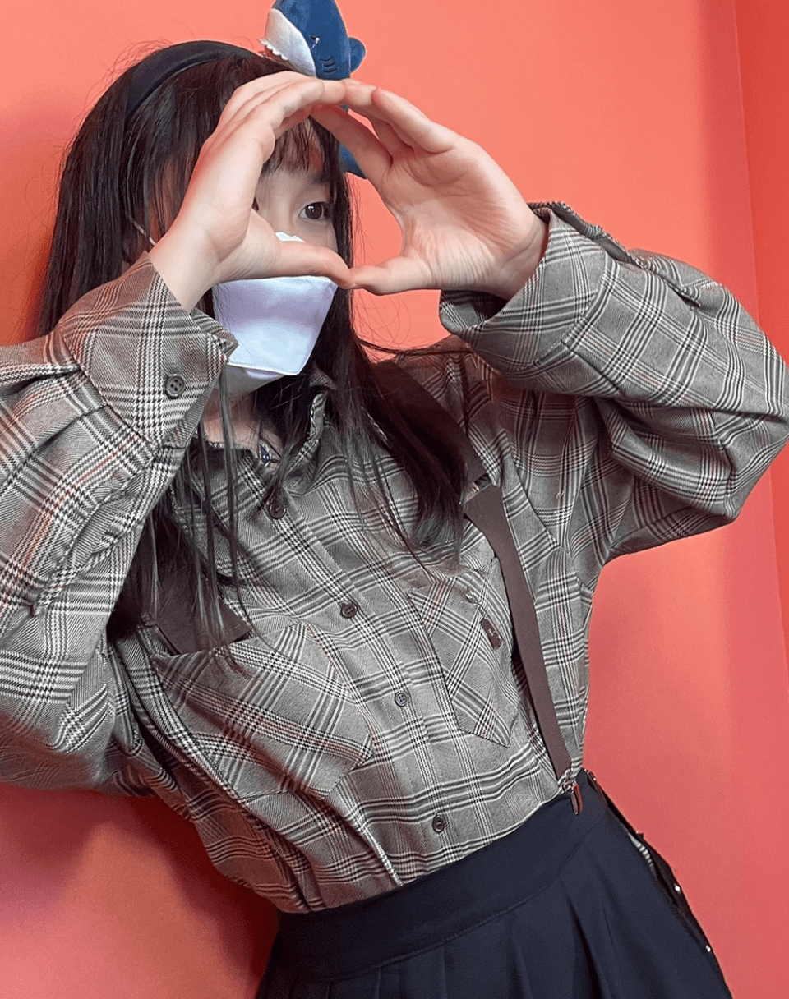

반갑습니다!
○○○○한 UI/UX를 만드는
디자이너 박주혜입니다
좋아서 시작했던 웹디자인이었지만,
어느덧 신념이 생기며 좋고자 하는 웹을 디자인하고 있습니다.
01. ●○○○
연골이 있어야 뼈와 근육을 붙들어 주어 중요하듯,
디자인을 할때는 전체를 붙들어주는 가이드가 중요하다고 생각합니다.
때문에 체계적인 디자인 가이드를 토대로 디자인을 하며, 그리드 시스템으로
와이드한 홈페이지더라도 정돈되어 보이도록 합니다.
작업전 정확한 가이드 정의로 홈페이지 전체에서 통일되고 정돈된 디자인이 나타나도록 합니다.
02. ○●○○
경력을 쌓는다는 것은 정글짐과 같아서 창의적으로
여러 가지 길을 탐색할 수 있다는 것입니다.
단 하나의 길만
존재하는 것이 아니라 여러 가지의 길이 존재합니다.
예상치 못한 상황에서 돌아갈 수 도 있는 것이고 이러면서 생각한 것 보다
다양한 경험과 사람들을 만나게 되면서 자신의 능력을 키울 수 있다는 것입니다.
03. ○○●○
언제까지 일할 수 있을까 고민할 필요 없지 싶다. 나무처럼 묵묵하게, 좋아하는 일을 재미있게 실컷 하면 되겠지 싶다.

04. ○○○●
연골이 있어야 뼈와 근육을 붙들어 주어 중요하듯,
디자인을 할때는 전체를 붙들어주는 가이드가 중요하다고 생각합니다.
때문에 체계적인 디자인 가이드를 토대로 디자인을 하며, 그리드 시스템으로
와이드한 홈페이지더라도 정돈되어 보이도록 합니다.
작업전 정확한 가이드 정의로 홈페이지 전체에서 통일되고 정돈된 디자인이 나타나도록 합니다.


BX를 생각하며 디자인을 합니다.
웹사이트는 브랜드를 가장 잘 보여주는 첫 화면입니다.
브랜드는 전체 미디어에 녹아있어 경험을 이끌어 가야 합니다.
좋아서 시작했던 웹디자인이었지만, 어느덧 신념이 생기며 브랜드가 녹아있는 웹을 디자인하고 있습니다.
저는 제 일을 좋아합니다. 좋아하니까 즐기게 되고, 더 잘하고 싶어집니다.
그러다보니 기본을 놓치고 싶지 않아 꾸준히 공부하게 되고, 발전해 나가고자 합니다.
목표를 향해 나아가는 의지, 끊임없이 솟아오르는 영감, 그리고 탄탄한 기본을 지키는 모습까지,
모두 제가 가진 장점이라 생각합니다.
좋아하는 일을 즐기면서 잘하는 것,
제가 꿈꾸는 저의 모습입니다.